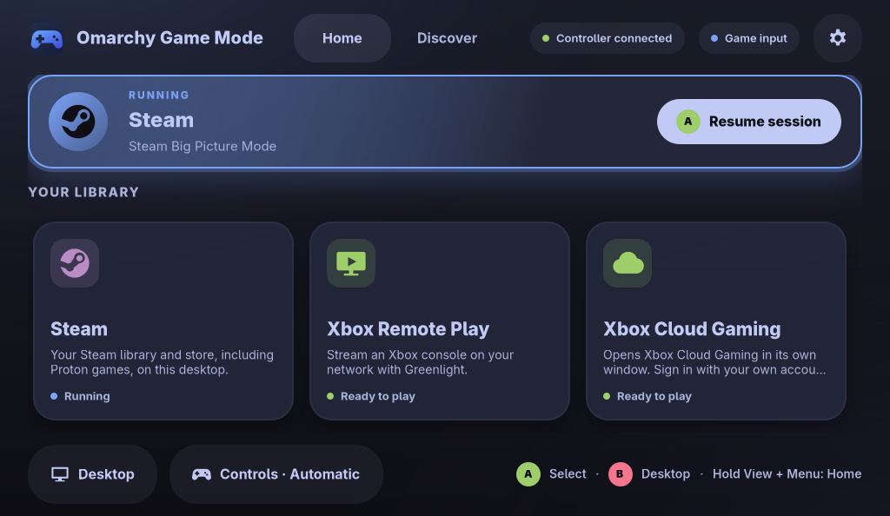

Make the handheld feel at home.
Our mission: make Omarchy Game Mode the natural starting point for handheld gaming on Omarchy.
A controller-first, full-screen home for your stores, streams and retro games. It installs only what you choose and never stands between your controller and your game.
Home, in your colors.
Game Mode picks up your Omarchy theme’s accent and status colors, and keeps Home dark and calm for the couch. Pick a theme to see this page follow along.

Built for the couch, polite to the desktop.
Everything a handheld needs to feel like a console, and nothing that makes Omarchy feel less like yours.
-
Controller-first, full screen
Home, Discover and Settings fill the screen with large, clearly focused targets. Controller, keyboard, mouse and touch all share one navigation model.
-
Installs you can see
Every installer is a fixed Omarchy command from the catalog, run in a visible terminal. Nothing installs in the background, and most installs ask you to confirm right there.
-
Hands off the Guide button
Game Mode never acts on the Xbox Guide button and never grabs your controller, so the button is left to Steam and your games.
-
Input that follows focus
Game Mode tracks the focused window: games it recognizes get game input, everything else gets desktop input, and it switches AntiMicroX profile sets for you if you use it. Prefer a fixed mode? Choose one in Settings. It holds until you switch apps.
-
Seven languages, right-to-left ready
Follows your Omarchy language unless you pick one. Arabic gets a mirrored, right-to-left layout.
- English
- Español
- Français
- Deutsch
- Português (Brasil)
- 日本語
- العربية
-
Opens at login, only if you ask
Turn on login start and Game Mode adds one autostart entry it can recognize and remove. It never replaces your session, display manager or Hyprland config.
Ten platforms, one front door.
Home holds the platforms you play. Discover lists the rest by category, explains each one and installs only when you ask.
Game stores 4
-
Steam
Opens straight into Steam’s controller interface, with your library, store and Proton games.
-
Heroic Games Launcher
Epic Games, GOG and Amazon Games libraries in one launcher.
-
Lutris
Windows and Linux games, including stores that don’t ship their own installer.
-
Battle.net
Battle.net games through Omarchy’s own launcher, no Steam required.
Streaming 4
-
Xbox Remote Play
Stream your Xbox console over your home network with the Greenlight client.
-
Xbox Cloud Gaming
Cloud play in its own window. Sign in with your own account.
-
NVIDIA GeForce NOW
Stream supported PC games from the cloud with your own account.
-
Moonlight
Stream from your own PC running Sunshine. Already included with Omarchy, so there’s nothing to install.
Retro games 1
-
RetroArch
Classic systems through RetroArch and libretro cores. Your ROMs stay in your Games folder.
Native games 1
-
Minecraft
The official Minecraft Launcher, right on your desktop.
Names are trademarks of their respective owners. Game Mode isn’t affiliated with or endorsed by them; it only launches apps on your system.
Learn it in ten seconds.
The same few buttons work everywhere. Labels use Xbox names; other controllers use the same positions.
- D-padorLeft stick
- Move focus. Hold to repeat.
- A
- Select.
- B
- Go back. From Home, return to the desktop.
- LBRB
- Switch between Home and Discover.
- Menu
- Open or close Settings.
- HoldView+Menu
- Jump back to Home from anywhere.
- Guide
- Never used by Game Mode, so it’s left to Steam and your games.
Your desktop stays yours.
Game Mode is a guest on your system, and it behaves like one.
-
Reads, never grabs
Controllers are read without exclusive access. No virtual devices and no injected events, so Steam and your games still receive every press.
-
Quiet when idle
Window changes arrive over Hyprland’s event socket, and controllers wake the app only when they send input. Nothing polls in the background; repeat timers run only while a button is held.
-
Fails safe
If the connection to Hyprland drops, Game Mode tells you, pauses window tracking and returns to desktop mode. Keyboard and touch keep working while it reconnects.
-
Never steals focus
When a game ends, Game Mode returns to Home, unless you’ve already moved on to something else.
-
Cleans up after itself
Login start writes one marked autostart file and removes only that file. Settings stay in
~/.config/omarchy-game-mode. -
Extras stay optional
AntiMicroX profile switching is supported, never required. No accounts and no telemetry.
Aim high. Ship honestly.
We want Omarchy Game Mode to become the natural starting point for handheld gaming on Omarchy: the screen you expect to see when you pick one up.
That’s an aspiration, not a status. Game Mode is an independent community project, not an official Omarchy release, and it only earns that place by being fast, dependable and respectful of the system around it. So here’s exactly where things stand.
Where it stands
- Home, Discover and SettingsIn the preview
- Ten-platform catalogIn the preview
- Seven draft languages, including ArabicNative review welcome
- Validation on handheld hardwareIn progress
- Packaged release and stable versionNot yet
- List of tested devicesAfter validation
Help with one small testing or review task. Read the contribution guide; hardware is not required for every task.
Try the preview.
There’s no packaged release or stable version yet. The preview runs from source on Omarchy while hardware validation continues.
Run it from source
git clone https://github.com/brianbaldock/omarchy-game-mode.gitcd omarchy-game-modepython3 omarchy-game-mode.pyNeeds Python 3, PyGObject and GTK 4 (python-gobject and gtk4 on Arch). Hyprland enables window tracking and game handoff; AntiMicroX is optional.
Good to know
- Running the preview doesn’t install anything system-wide.
- Platforms install only when you choose Install in Discover.
- Login start stays off until you turn it on in Settings.
- The repository is the source of truth for setup, packaging and removal.
- Hit a problem? Open a hardware report with your device and what happened. Virtual-controller stacks such as HHD/InputPlumber are not yet validated.
Straight answers.
The questions worth asking before you hand your handheld to anything new.
Is this an official Omarchy project?
No. Omarchy Game Mode is an independent community project. It isn’t an official Omarchy release and isn’t endorsed by the Omarchy project. Becoming the natural default for handheld gaming on Omarchy is our goal, and one we intend to earn. Omarchy itself lives at omarchy.org.
Will it take over my system?
No. It’s an ordinary app. Press B on Home to return to the desktop. Login start is optional and off until you enable it. Game Mode doesn’t replace your session or display manager, and it doesn’t edit your Hyprland config.
Will it interfere with Steam Input or my games?
Game Mode reads controllers without exclusive access and creates no virtual devices, so it never sits between your controller and Steam or your games. It never acts on the Guide button. In Automatic mode it switches to game input when it recognizes the focused window as a game, and you can override that by hand.
Which handhelds are supported?
The goal is any handheld that runs Omarchy. Validation on real hardware is in progress, and devices will be listed only once they’ve actually been tested.
Does it install anything by itself?
No. An install starts only when you choose one in Discover, using a fixed Omarchy command in a visible terminal. Most ask you to confirm there; for Xbox Remote Play, choosing Install is the confirmation.
How can I help?
Help test a handheld, review a translation, or improve Python/GTK interactions and accessibility. Read the contribution guide, then pick a scoped help wanted issue. Small contributions and reproducible reports are welcome. The code is MIT-licensed.